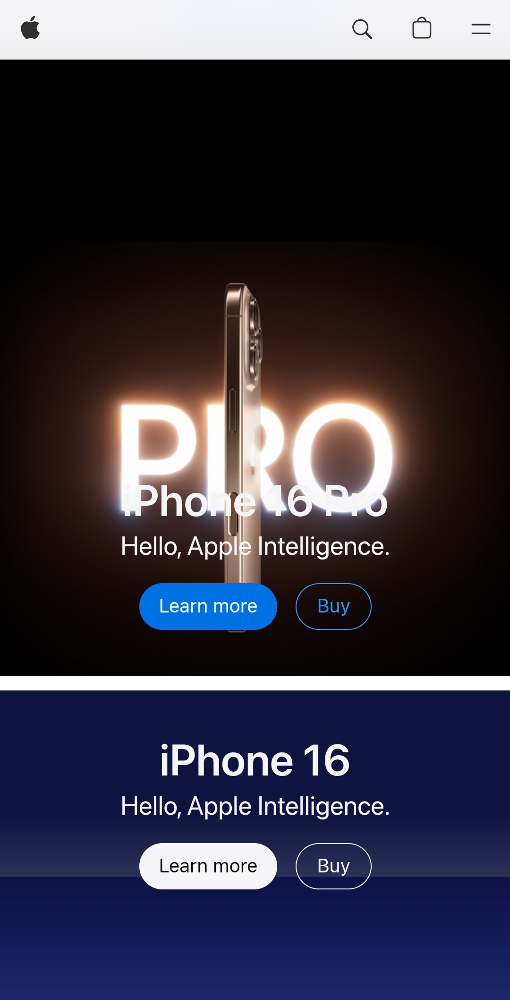

Alignment
Company Name: Apple
Website: Apple
Description: Apple is a good example of having Alignment on their website, it’s clear how each thing you are looking at has its own purpose and reason, while still being organized and professional. This makes the website easy to follow along and read through.
Repetition
Company Name: Google
Website: Google

Description: Google is easy one of the best when it comes to consistency, especially when it comes to products and services that they maintain. Ranging from the platform Android to its web services. On its website you can tell there is a consistent style and colors they use, both in the fonts as well as the logo’s. The makes it easy for the user to feel comfortable with using all of Googles products.
Contrast
Company Name: Amazon
Website: Amazon

Description: Amazon relies heavily on the use of Contrast when it comes to managing their website. This is a good way of how they are able to separate each item or subject they want you to look at without getting lost in so many items up front. This is also how they are able to make things stand out as well that they think you may want to buy, like items on sales. Every space is used up and this is why the contrast approach works so well.